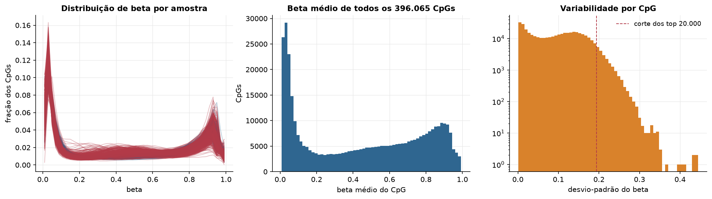
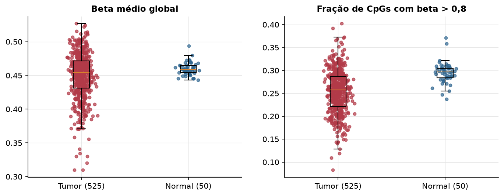
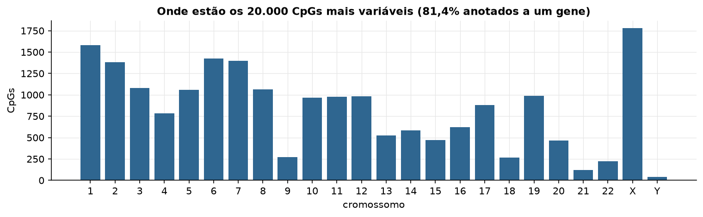
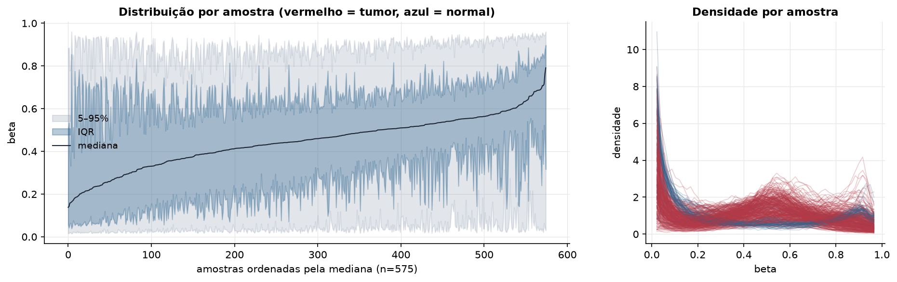
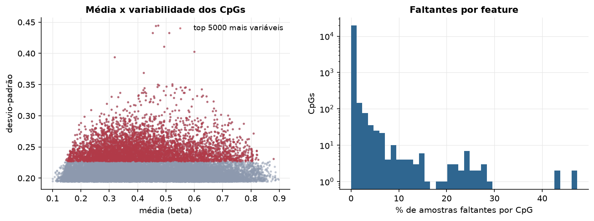
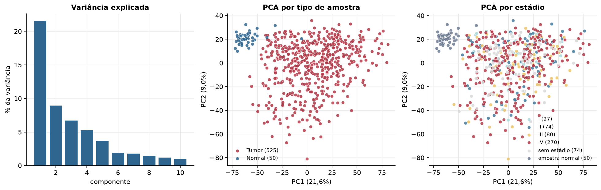
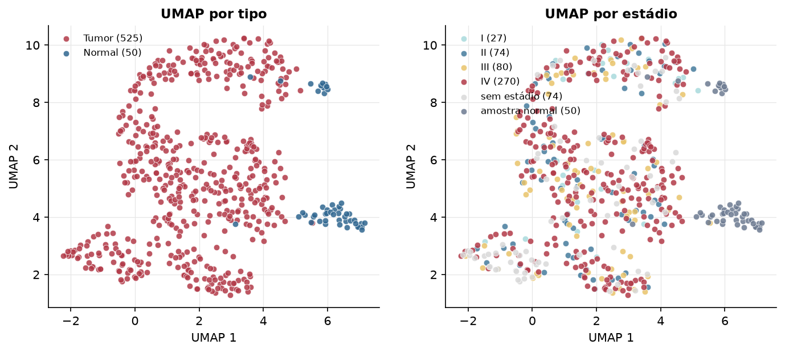
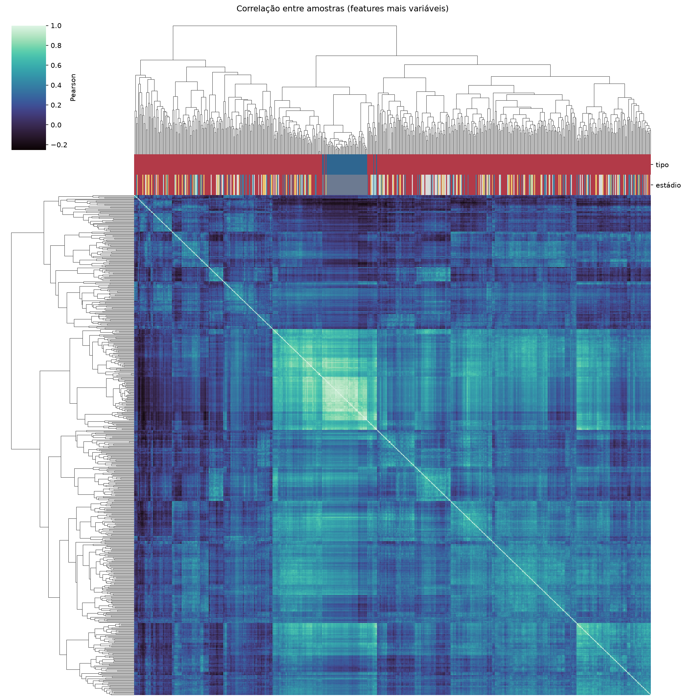
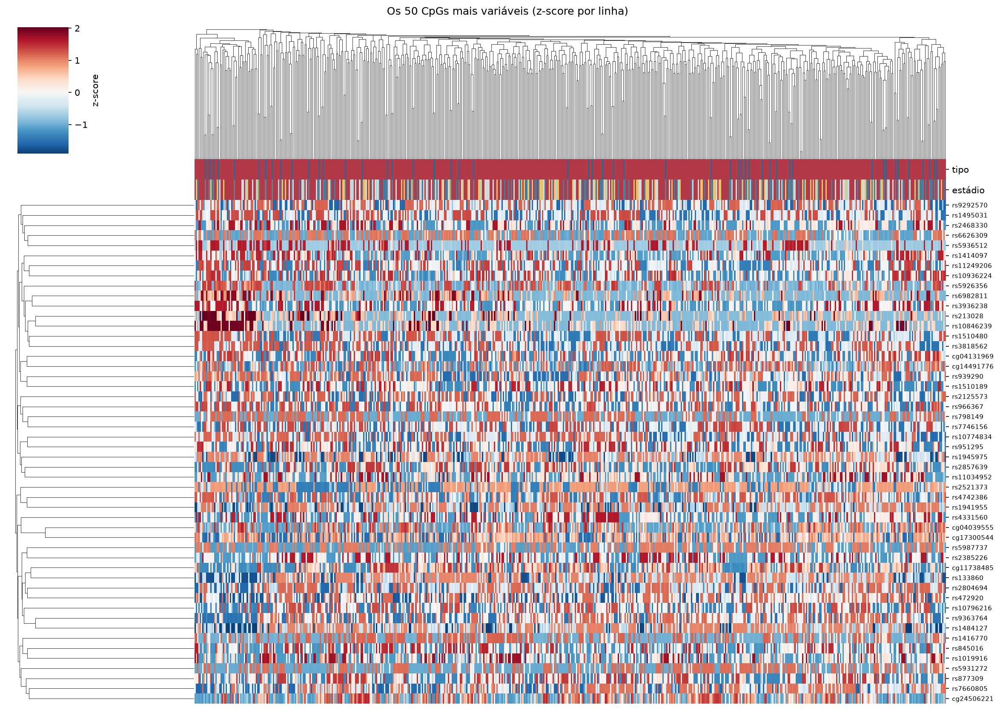
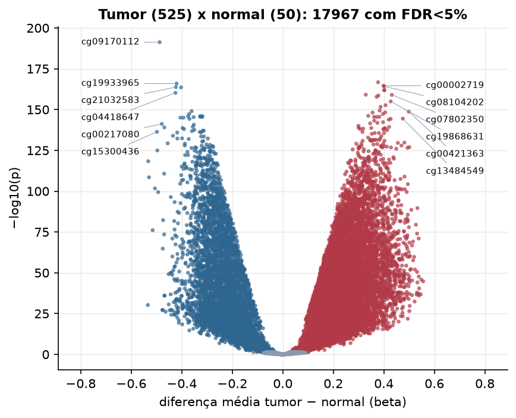

HNSC · Metilação do DNA (450k)
Illumina Infinium HumanMethylation450, valores beta (0 a 1) · gerado em 21/10/2026 22:10
396.065CpGs medidos
375.197CpGs sem faltante
20.000CpGs
525amostras tumorais
50amostras normais
0,1%valores faltantes
Fonte: PanCanAtlas HM450 via API do Xena
O array tem ~485 mil CpGs. Para não ocupar espaço, guardamos estatísticas de todos os CpGs e só os 20.000 mais variáveis para PCA, UMAP e heatmaps.
Principais resultados
- A distribuição de beta é bimodal: a maioria dos CpGs está quase toda desmetilada (perto de 0, típico de ilhas CpG em promotores) ou quase toda metilada (perto de 1, corpo gênico e regiões intergênicas). 43,7% dos CpGs têm beta médio intermediário (0,2 a 0,8).
- Beta médio global: 0,455 nos tumores e 0,459 nos normais (hipometilação global no tumor, como é comum em câncer).
- 20.000 CpGs medidos em 575 amostras (525 tumorais e 50 normais); 0,1% dos valores estão faltando.
- Os dois primeiros componentes principais explicam 21,6% e 9,0% da variância das features mais variáveis.
- Correlação mediana entre amostras: 0,30.
- Tumor x normal: 17967 CpGs diferentes com FDR < 5% (11966 maiores no tumor, 6001 maiores no normal; 50 pacientes têm o par tumor-normal).
- Mais aumentados no tumor: cg19355186, cg00002719, cg08104202, cg01791874, cg01645295, cg08516516, cg07802350, cg21901718.
- Mais reduzidos no tumor: cg09170112, cg19933965, cg21032583, cg02303068, cg04418647, cg19907968, cg11311032, cg05950713.
- Associações clínicas com p < 0,05 nos componentes principais: PC1 com sexo (p=0.00013); PC2 com sexo (p=2e-05); PC3 com sexo (p=5.9e-24); PC1 com idade (p=0.00097).
Distribuição global



Exploração dos CpGs mais variáveis
Distribuição dos valores


Estrutura das amostras




Tumor x normal

Features mais diferentes entre tumor e normal
| diferenca_tumor_menos_normal | t | p | fdr | |
|---|---|---|---|---|
| cg09170112 | -0.488 | -48.327 | 5.42e-192 | 1.08e-187 |
| cg19355186 | 0.377 | 41.336 | 1.87e-167 | 1.87e-163 |
| cg19933965 | -0.421 | -39.728 | 1.12e-166 | 7.49e-163 |
| cg00002719 | 0.399 | 39.433 | 2.46e-165 | 1.23e-161 |
| cg08104202 | 0.401 | 43.546 | 6.33e-165 | 2.53e-161 |
| cg21032583 | -0.424 | -39.488 | 1.73e-164 | 5.76e-161 |
| cg02303068 | -0.403 | -40.464 | 2.45e-164 | 6.99e-161 |
| cg01791874 | 0.402 | 41.181 | 1.04e-162 | 2.6e-159 |
| cg01645295 | 0.402 | 38.821 | 1.52e-162 | 3.38e-159 |
| cg04418647 | -0.425 | -39.023 | 5.78e-161 | 1.16e-157 |
| cg08516516 | 0.328 | 38.82 | 7.54e-160 | 1.37e-156 |
| cg07802350 | 0.432 | 40.735 | 1.02e-159 | 1.7e-156 |
| cg21901718 | 0.378 | 40.777 | 2.37e-159 | 3.65e-156 |
| cg23180938 | 0.371 | 38.005 | 1.49e-158 | 2.13e-155 |
| cg19868631 | 0.427 | 39.766 | 1.07e-155 | 1.43e-152 |
| cg04781584 | 0.407 | 38.572 | 2.15e-153 | 2.68e-150 |
| cg15779837 | 0.387 | 39.448 | 2.18e-152 | 2.57e-149 |
| cg13592399 | 0.383 | 39.342 | 3.95e-150 | 4.39e-147 |
| cg19907968 | -0.361 | -36.985 | 8.79e-150 | 9.25e-147 |
| cg00421363 | 0.499 | 40.527 | 2.18e-149 | 2.18e-146 |
| cg00339556 | 0.405 | 39.488 | 5.77e-149 | 5.5e-146 |
| cg14164044 | 0.355 | 38.317 | 6.88e-149 | 6.25e-146 |
| cg11311032 | -0.371 | -37.784 | 4.61e-148 | 4.01e-145 |
| cg00100121 | 0.396 | 36.017 | 5.23e-148 | 4.36e-145 |
| cg25092681 | 0.338 | 36.483 | 7.23e-147 | 5.79e-144 |
| cg05950713 | -0.318 | -36.46 | 1.02e-146 | 7.87e-144 |
| cg02216247 | -0.327 | -35.472 | 1.11e-146 | 8.2e-144 |
| cg11580212 | -0.375 | -39.014 | 1.35e-146 | 9.62e-144 |
| cg13380622 | -0.328 | -36.791 | 2.34e-146 | 1.62e-143 |
| cg10109500 | 0.382 | 38.411 | 2.76e-146 | 1.84e-143 |
Associação com variáveis clínicas
p-valores da associação dos três primeiros componentes principais (só tumores) com estádio (Kruskal-Wallis), sexo (Mann-Whitney), idade (Spearman) e sobrevida global (Cox univariado).
| estádio (Kruskal) | sexo (Mann-Whitney) | idade (Spearman) | sobrevida OS (Cox) | |
|---|---|---|---|---|
| PC1 (17,4%) | 0.742 | 0.000134 | 0.000972 | 0.293 |
| PC2 (8,7%) | 0.333 | 2.04e-05 | 0.203 | 0.054 |
| PC3 (7,4%) | 0.231 | 5.93e-24 | 0.279 | 0.069 |